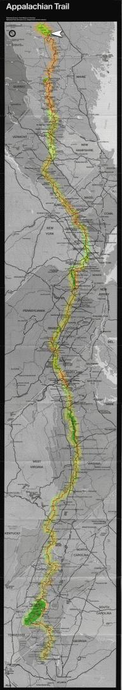

| The Fox | Statistics | Maps | Churches |
StatusConfirmed - Last contact with the Fox was from:Confirmed - Baxter Peak on Mt Katahdin Confirmed - the end of the trail! Archives Available[9 September 1999] Since the Fox's first AT hike is now complete (and we have nothing else interesting to add here) we are making the archives of these reports available. Here is a link to every news article that appeared on this page along with the map indicating his location:KATAHDIN! The Journey is Complete[13 August 1999] We joined the Fox and his parents today for a successful hike of Mt Katahdin in Baxter State Park in Maine, marking the end of his first hike of the AT. Skies were clear this morning as we woke in his lean-to and prepared to hike to the summit. He reached the top with his parents at 11:05am EDT. We will return with him to Atlanta after showering him off and eating a lobster dinner with his family.At threshold of Hundred Mile Wilderness[7 August 1999] The Fox spent last night in Monson, Maine, and today (Saturday) started the Hundred Mile Wilderness that lies between the last civilization along the trail and its end in Baxter State Park.Meanwhile, myself and a friend are in Connecticut and are on schedule to meet the Fox when he arrives at Katahdin campground, and will hike the final eight miles of the Appalachian with him and his family. Maine![29 July 1999] On Wednesday we received word that the Fox has reached Andover, Maine, placing him in the last and northernmost of the states along the Trail. He hopes to arrive at Katahdin in roughly two weeks.Gorham, NH[25 July 1999] On Sunday night the Fox checked in, and reported that he is safely past the Presidential range of New Hampshire without sharing any of the dire experiences shared by southbounders. The wind was blowing at around 20 to 25 miles per hour. His path took him in and out of the clouds, but offered many good views when he passed out of them. He mentioned in particular that it was ``exceptionally clear'' when he reached Franconia Ridge and offered a ``spectacular view.'' From Gorham he will quickly pass into Maine, the final state of his journey.[Editorial Note: you have probably noticed these updates slowing somewhat, as the maintainer of these pages prepares to leave for a two-week vacation that will end with picking up the Fox at Katahdin. An effort will be made despite this to continue updating the pages. Be forewarned, however, that when the Fox enters the hundred-mile wilderness at the end of the trail that updates will probably cease until we meet him at the other end.] |

|